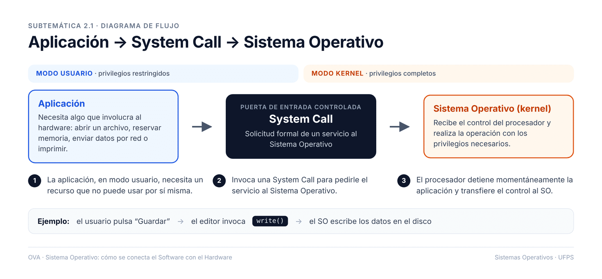

2. Llamada al Sistema (System Call) y su Función

Una aplicación puede realizar acciones cotidianas, como guardar un archivo o imprimir un documento.

Aplicación → System Call → Sistema Operativo
¿Por qué las aplicaciones no pueden acceder directamente al hardware?
Las aplicaciones no pueden acceder directamente al hardware para garantizar la seguridad y estabilidad del sistema. Este enfoque evita que programas maliciosos o con errores interfieran con el funcionamiento del hardware, lo que podría causar fallos o daños. Además, el sistema operativo actúa como un intermediario que gestiona los recursos de manera eficiente y equitativa entre las aplicaciones.
Al restringir el acceso directo, se asegura que las operaciones críticas sean controladas y monitoreadas adecuadamente. Esto también permite la implementación de políticas de acceso y uso que optimizan el rendimiento general del sistema.
¿Qué tipos de servicios se solicitan mediante System Calls?
Las System Calls permiten a las aplicaciones solicitar servicios esenciales del sistema operativo. Entre estos servicios se incluyen la gestión de archivos, como abrir, leer o escribir en un archivo, y la administración de procesos, como la creación y terminación de procesos. También abarcan la comunicación entre procesos y el acceso a dispositivos de hardware.
Estos servicios son fundamentales para que las aplicaciones interactúen con el sistema operativo de manera controlada y segura. Proveen una interfaz estándar que abstrae la complejidad del hardware subyacente.
¿Qué riesgos se evitan con el uso de System Calls?
El uso de System Calls ayuda a mitigar varios riesgos asociados con el acceso directo al hardware. Por ejemplo, previenen conflictos entre aplicaciones que intentan usar los mismos recursos simultáneamente. También protegen contra accesos no autorizados a datos sensibles o recursos críticos del sistema.
Además, las System Calls permiten al sistema operativo implementar medidas de seguridad, como la validación de permisos y la supervisión de actividades sospechosas. Esto contribuye a mantener la integridad y la estabilidad del sistema.
¿Cómo se transfiere el control del procesador al Sistema Operativo?
El control del procesador se transfiere al sistema operativo mediante interrupciones y excepciones. Cuando una aplicación realiza una System Call, se genera una interrupción que notifica al sistema operativo para que tome el control. Este proceso asegura que las operaciones solicitadas se ejecuten de manera controlada y segura.
Las interrupciones también se utilizan para manejar eventos del hardware, como la llegada de datos desde un dispositivo de entrada. Esto permite que el sistema operativo responda rápidamente a eventos importantes mientras mantiene el control general del sistema.
Una System Call es una interfaz que permite a los programas solicitar servicios al sistema operativo.
El Kernel es el núcleo del sistema operativo que gestiona los recursos y la comunicación entre hardware y software.
El Modo Usuario es un nivel de operación donde las aplicaciones se ejecutan con restricciones para proteger el sistema.
Un Servicio del Sistema Operativo es una funcionalidad que proporciona soporte a las aplicaciones y usuarios.
Los Privilegios son niveles de acceso que determinan qué operaciones puede realizar un usuario o proceso.
Haz clic en cada tarjeta para ver la respuesta.
¿Cuál de las siguientes acciones SÍ requiere una System Call?
La System Call es la puerta de entrada hacia:
Antes de invocar una llamada al sistema, ¿en qué modo se ejecuta una aplicación?
¿Qué ocurre justo después de que una aplicación invoca una System Call?